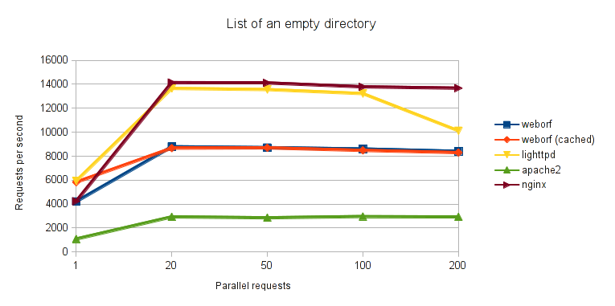
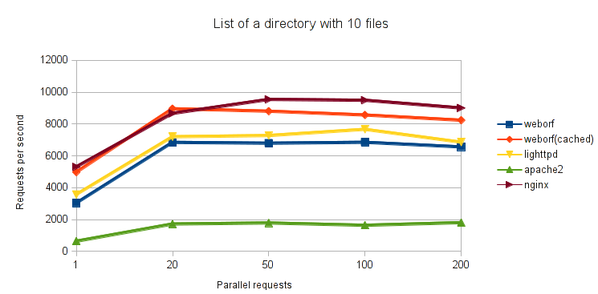
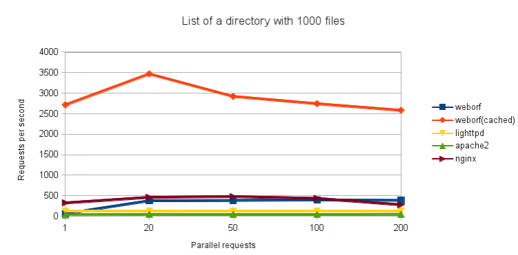

Weborf caching system
Weborf can cache the server generated contents such as XML responses to PROPFIND requests and HTML lists to directories without an index file. With the expense of a small amount of disk space, this can greatly increase the speed, since those responses only need to be read from disk, rather than generated at run time.
To understand the limits of this mechanism it is important to grok how it works.
It must be noted that the couple of values inode,deviceId uniquely identify every file at a given time. Since a file could be deleted and a new file created with the same inode number and within the same partition, we will also use the modification time. Cache files will be named using those three values, so if the original file is modified, deleted and a new one created with the same inode, the cache will be automatically considered as invalid.
Unfortunately the resolution for the modification time is one second, so changes occurring faster, will indeed create problems. But since most of the HTTP caching works with that resolution, it can be considered acceptable.
So what will happen when using the cache and requesting the HTTP list of files within a directory, is that weborf will stat() that directory, gather the inode,deviceId and modification time, and see if there is a file with such a name within the cache directory. If there is, the content of that file will be sent to the client, otherwise this file will be generated and will be filled with the same content sent to the client, so that further requests will access that file.
It should be noted that modification time of a directory is updated only when files are created or removed, hence if a file has been modified but already existed, the modification time of the directory will not be updated. To overcome this problem weborf uses inotify to know when a file is being modified, and invalidate the cache. Since inotify is Linux specific, on other platforms cache will be invalidated only upon file creation or deletion. The use of inotify can be inhibited by using the –fastcache option; that will allow a faster startup, a smaller memory footprint at the expense of the possibility of having incorrect results.
In some situations it could be perfectly safe to use the –fastcache option, for example if one wants to list .tar.gz files that are just added or removed but never modified themselves.
Caching a response for an empty directory does not save much activity for the server, but when there are several files within that directory, it is certainly faster to read from a file and writing to a socket rather than performing stat() on each file within the requested directory, generating the HTML or XML at run-time and then send it all to the client.
Different requests on the same item
There can be different requests pertaining the same item (file or directory). For example two DAV requests asking different properties of the file. To be able to cache this, a bitmap is used to keep track of all the properties requested, then it is converted to an integer, and attached to the other three values to generate the name of the file in cache.
Server-side or client-side cache
While keeping the cache on the server side does not prevent the content from being re-transmitted several times, it allows at least the usage of the same cache for the several clients that might be doing the same request, saving the server from re-generating it for each client.
However, on the assumption that caches are marked as invalid solely by updating the modification time of a directory 1), the web server can send the modification time of the directory to the client, enclosed in an ETag HTTP header, hence letting the client cache the directory and download the new content only when there is a new content to download.
The problem of this approach is that it requires write permissions to work.
Concurrency
There can be three possible cases when two threads are asked to access the same cacheable item:
- Item exists, and both threads can read from it
- Item does not exist
- Item does not exist, one thread starts creating it and before it has finished another thread tries to read from an incomplete cache item.
To solve the issues, all cache access are protected by flock(2). So when reading all the threads place a shared lock on the item, while when writing they place an exclusive lock that will prevent the file from being read.
Benchmarks
To avoid network bottlenecks, all the benchmarks were performed on localhost, all on the same machine. The benchmarks illustrate how many requests per second web servers can serve, in relation to the increase of parallelism. Higher value is better.
In the 1st one the listing of an empty directory was requested. In this case the cache is not so useful but we can see it doesn't introduce any particular performance loss compared to the timing we get when cache is not used. Also, weborf doesn't perform particularly well compared to other servers.
In the 2nd test, a directory containing ten files was requested. Here there is a performance gap between cached and cache-less weborf.
In the 3rd test, a very heavy directory was used, containing one thousand files. Here it is very clear that generating a content once and then reusing it several times is much more convenient than re-generating it every time.
Versions used
| Name | Version |
| weborf | 0.13 |
| lighttpd | 1.4.28 |
| nginx | 1.0.1 |
| apache | 2.2.19 |